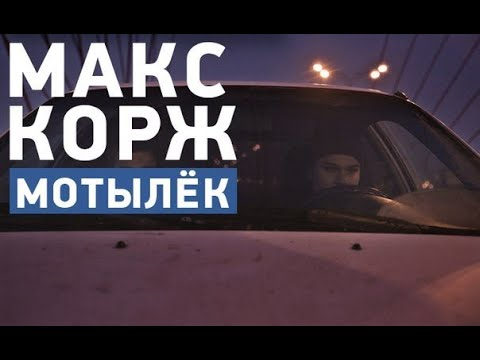

Ее виной
Текст
[Куплет 1]
Ну что ты, братишка, притих? Обида залита в груди Не можешь ни хавать, ни пить Сука, не хочется жить Дарил ей столько добра Ввалил в неё столько бабла Ты думал, лишь ты и она И спокойно ладил дела Сколько потерянных дней Конечно, может быть всякое, но только не с ней Сколько потерянных лет Обида прожигает грудь до боли, сильнее Ничего, потерпи месяцок Я это сам не по рассказам знаю Что скоро твой любимый мотылёк В твоих глазах станет обычной тварью[Припев]
Я затолкаю тебя в тачку силой Я отвезу тебя к пацанам Там банька, рыбка и пиво Братишка, я те сдохнуть не дам Как много в мире девушек красивых Искренних, верных, да, и простых Такая вот терапия Будет ещё больней, но ты держись[Куплет 2]
От того порою грустно, что в жизни бывает Много несправедливых вещей Того, кто о нас ноги вытирает Как ни странно, мы любим, блядь, да ещё сильнее Ты будешь вырываться, и бежать к ней Я тебя крепко свяжу Ты столько лет доверял ей напрасно Теперь, братишка, доверься Коржу Сколько с тобой изведаем стран Сколько с тобой заработаем бабок Сколько с тобой попробуем баб: Азиаток, метисок, мулаток Теперь ты знаешь, что от них ожидать (Ожидать) Не попадёшься больше в эти лапы (Никогда) Ты знаешь, в жизни есть только мать Только она будет любить тебя сильным и слабым Конечно, эта сука приползёт — и очень быстро И со старта зальёт тебе в уши Она натрахалась вдоволь со своим футболистом Теперь ей хочется стабильности, хочется кушать Ты посмотри, братан, какой закат Всё остальное, брат, такая мелочь Санёк, ливни ему чё-нить в стакан Чтобы не думал, чё с собой делать[Припев]
Я затолкаю тебя в тачку силой Я отвезу тебя к пацанам Там банька, рыбка и пиво Братишка, я те сдохнуть не дам Как много в мире девушек красивых Искренних, верных, да, и простых Такая вот терапия Такая вот взрослая жизнь